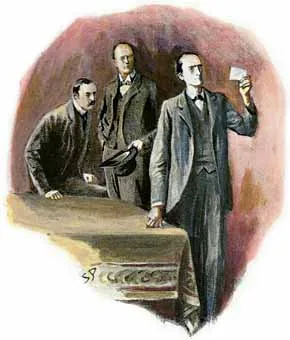
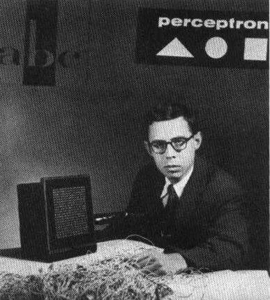
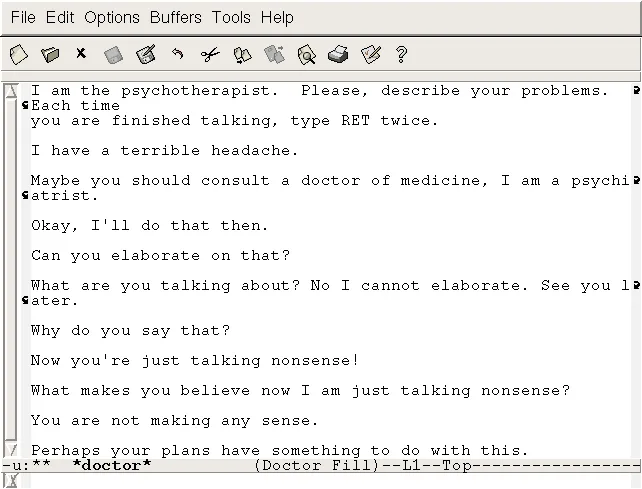
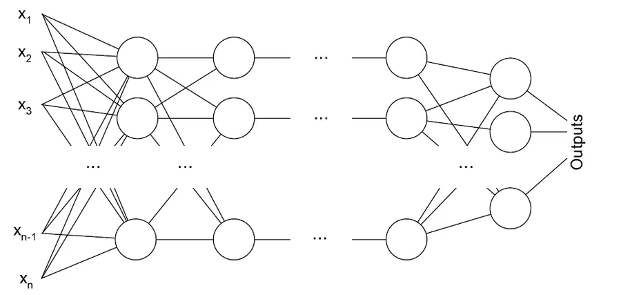
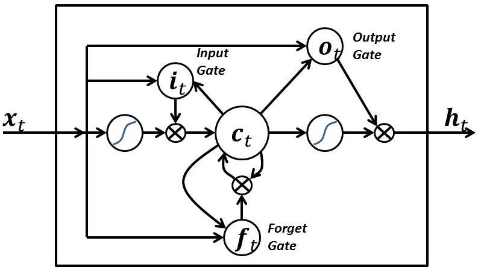
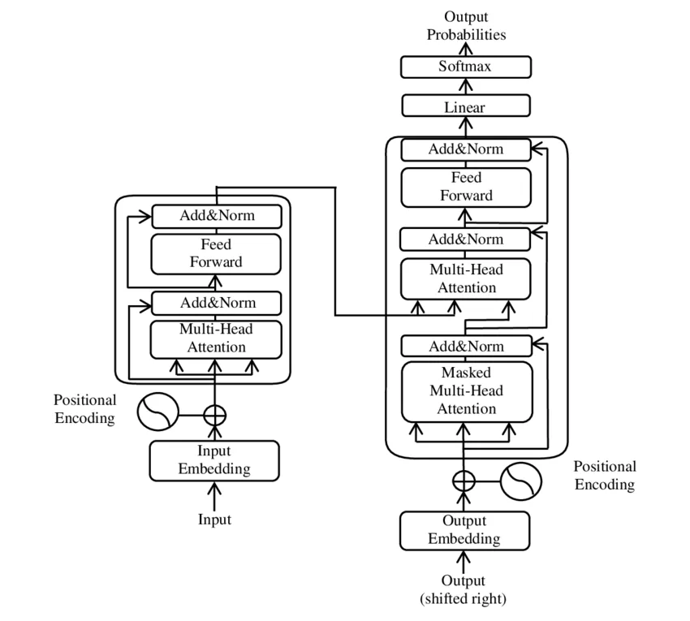

Восход AI-инженерии
AI Engineering
Это практическое руководство по созданию приложений на основе готовых фундаментальных моделей (foundation models). В книге объясняется, чем AI-инжиниринг отличается от традиционного ML-инжиниринга, и предлагается пошаговый фреймворк для разработки AI-продуктов — от простых методов (промпт-инжиниринг) до более сложных (RAG, дообучение, AI-агенты). Особое внимание уделяется вопросам оценки моделей (включая подход «AI-as-a-judge»), а также оптимизации задержек и стоимости при развертывании

Программа вечера
«Если бы можно было одним словом описать развитие AI после 2020 года, это было бы слово „масштаб“».
2018
2019
2020
2023
2025
Ни одна технология в истории не росла так быстро.
2018
2019
2020
2023
2025
Данные растут быстрее, чем интернет их рождает. Качественного текста — лишь ~3–5 трлн токенов, и он почти исчерпан.
По прогнозу Epoch AI качественные данные закончатся в .
Как индустрия решает нехватку данных
- СинтетикаDeepSeek R1Одна модель генерирует обучающие данные для другой — например, цепочки рассуждений.
- ЛицензированиеOpenAI × News Corp, RedditПокупка приватных, ещё не попавших в общий доступ данных у правообладателей.
- МультимодальностьYouTube, аудио, 3DВидео и аудио на порядки больше, чем текста: 500 часов видео загружается на YouTube каждую минуту.
- Повторное использованиеLlama 4 (4+ эпохи)Обучение на одних и тех же данных в несколько проходов (эпох).
- RL / верификацияo3 / o4Модель учится на проверке правильности ответов, а не на новых текстах.
2018
2019
2020
2023
2025
Энергия = стоимость каждого токена.
- Microsoft перезапустила АЭС Three Mile Island под дата-центры (2024).
- Amazon купила дата-центр у АЭС Susquehanna.
- Google — контракты на геотермальную энергию (Fervo).
- Stargate (OpenAI+Oracle+SoftBank, 2025): $500 млрд на AI-инфраструктуру.
- NVIDIA — самая дорогая компания мира ($3–4 трлн+).
Два последствия масштабирования
AI-инженерия — отдельная профессия
Спрос вырос, барьер входа упал: создание приложений на готовых моделях стало одной из самых быстрорастущих инженерных дисциплин.
Современные модели — это кульминация 70 лет






Языковая модель — это статистика языка
Не «искусственный разум», а предсказатель следующего слова: какое продолжение вероятнее.
Токены — атомы языка
Модель видит не буквы и не слова, а токены: символ, слово или часть слова.
Токены дают разбивать слова на значимые компоненты: «cook» + «ing» — оба несут часть смысла исходного слова.
Уникальных токенов меньше, чем уникальных слов — а значит меньше и размер словаря модели.
Токены помогают обрабатывать незнакомые слова: даже выдуманное «chatgpting» собирается из кусочков — без «дыр» в словаре.
Токенизация
Процесс разбивки исходного текста на токены и называется токенизацией.
приближённая разбивка для модели уровня GPT-3 · русские слова дают в 2–3 раза больше токенов
Словарь модели — набор всех токенов
Из небольшого числа токенов можно составить огромное число слов — как из алфавита. Размер словаря у моделей разный:
Два типа языковых моделей
Видит контекст с обеих сторон сразу. Не генерирует текст, а понимает его — для классификации, тональности, эмбеддингов.
Предсказывает следующий токен по предыдущим и генерирует непрерывно.
Та же авторегрессия, но модель сначала генерирует скрытую цепочку рассуждений (chain-of-thought), а потом ответ.
«Языковая модель» = авторегрессионная
Дальше под «языковой моделью» мы всегда понимаем именно её.
Языковая модель = машина-завершатель
«Завершения — это прогнозы, основанные на вероятностях, и нет гарантии, что они верны».
Два вида машинного обучения
Обучение алгоритмов на размеченных данных — мощно, но дорого и долго.
Показываете модели, какие ответы правильные.
Модель ищет закономерности между картинкой и меткой.
Теперь уже красный квадрат и синий треугольник — цвета новые, а модель всё равно узнаёт форму.
Языковые модели учатся на текстовых последовательностях без разметки: модель сама выводит метки из входных данных.
Проблемы обучения с учителем
Возьмём AlexNet (2012). Нажимай — и смотри, как растёт цена разметки.
Преимущество самообучения
Модели учатся на текстовых последовательностях — разметка не нужна. А текст окружает нас повсюду, поэтому данных практически бесконечно.
«Большая» — понятие относительное
2018
117 млн
От языковых моделей к LMM
Чтобы работать в реальном мире, AI нужно обрабатывать не только текст.
От LLM и LMM к базовым моделям
Базовые модели решают многое «относительно хорошо», а под конкретную задачу — донастраиваются. Ориентир сменился: не «создать», а «настроить». Наведи на метод адаптации.
AI-инженерия
«AI-инженерия» — это процесс создания приложений на основе базовых моделей. Три фактора превратили её в профессию — нажми, чтобы раскрыть:
Модели делают не только старое лучше, но и совершенно новое. А это почти все задачи бизнеса.
Код
Cursor, Claude Code, Copilot. Агенты пишут приложения по описанию.
Видео и изображения
Sora, Kling, Runway, Midjourney. Голливуд — VFX, дубляж.
Наука
Лекарства (Insilico), материалы (GNoME — 2,2 млн), доказательства (AlphaProof).
AI создаёт AI
Синтетические данные, код для обучения других моделей — рекурсивное улучшение.
Успех ChatGPT запустил взрыв денег, а вместе с ним — падение стоимости и рост доступности.
«Каждая третья компания S&P 500 упоминает AI. Инвестиции сместились с „дайте модель“ на „дайте инфраструктуру для агентов“».
«Модель как услуга» через API. Не нужна инфраструктура — достаточно идеи и английского языка.
Пишут 50–80% кода. Разработчик становится «редактором» и «архитектором».
Одна из самых быстрорастущих
«AI-инженерия стремительно становится одной из самых быстрорастущих инженерных дисциплин».